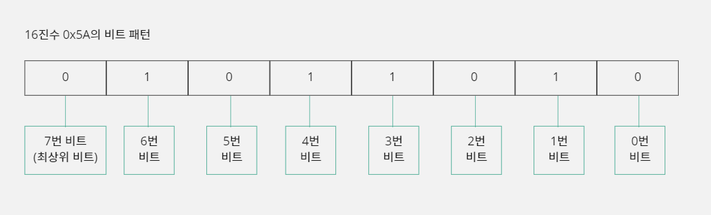
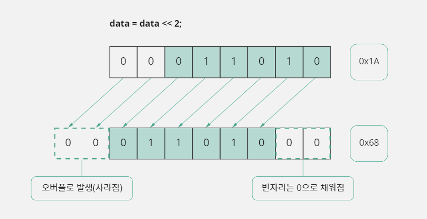
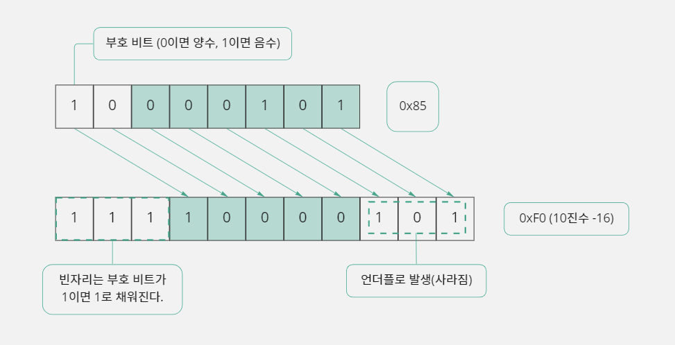
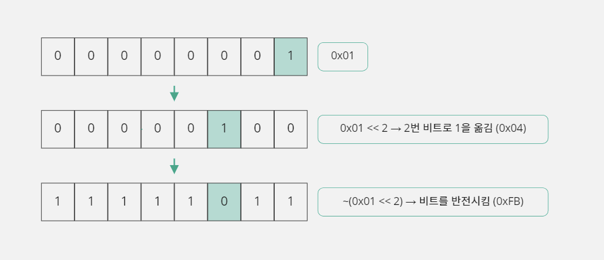
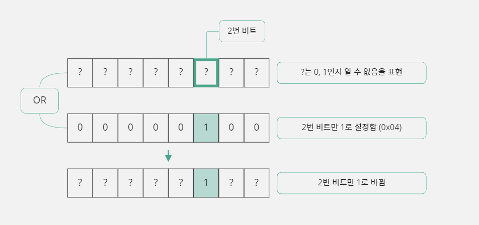
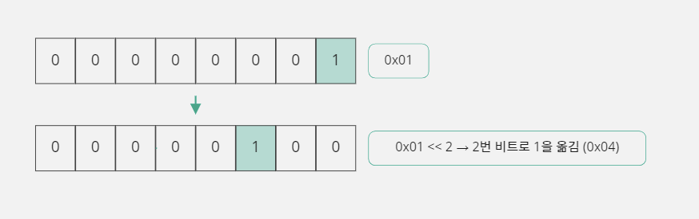
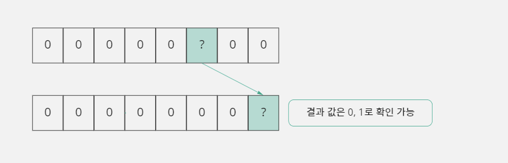
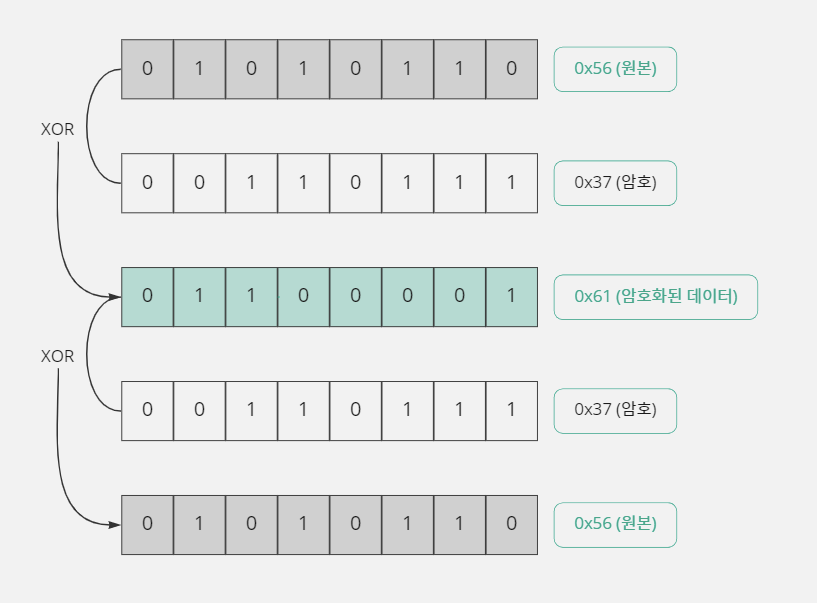

10. 시프트 연산자와 비트 연산자
10-1. 비트 단위 연산과 비트 패턴
비트 단위 연산자가 필요한 이유
- 비트는 0 또는 1을 저장할 수 있는 공간이다.
- 이 장에서 배울 것들은 이 '비트'를 다루는 데 필요한 연산자이다.
- C 언어는 왜 비트 단위의 연산자를 제공하는 것일까?
- 프로그램이 다루는 데이터 중에 두 가지 상황 중 한 가지를 선택하거나 저장하는 경우가 많다.
- 예를 들어 '전등의 상태'를 프로그램에 저장해야 한다면, 이런 상태를 '꺼짐', '켜짐'이라고 문자 그대로 저장하면 프로그램의 처리 효율이 낮아질 수 밖에 없다.
- 따라서 문자가 아닌 숫자로 저장해 효율을 높이는 것이 좋다.
- 0이면 '꺼짐'을 의미하고 1이면 '켜짐'을 의미하도록 약속해서 사용하는 것이다.
- 이런 상황에서 우리는 '1비트'에 0 또는 1 중 한 가지 값을 저장할 필요를 느낀다.
- 하지만 C 언어에서 제공하는 자료형의 최소 단위는 1바이트(8비트)이다.
- 0, 1 중에 하나를 저장하더라도 무조건 1바이트 저장 공간을 사용하는
char형 변수를 선언하고 사양해야 하는 것이다.
unsigned char lamp_state = 0; // 기본값은 전등이 꺼져 있음
lamp_state = 1; // 전등이 켜지면 1로 변경함
- 0과 1로 자료를 저장할 수 있는 프로그램을 만들 때 비트 단위로 연산한다면 메모리를 많이 절약할 수 있다.
- 이렇게 비트 단위로 어떤 작업을 하고 싶다면 시프트 연산자와 비트 연산자를 반드시 알아야 한다.
비트 패턴과 16진법
- C 언어는 2진법 상수 표현을 제공하지 않아서 소스 코드에서는 2진법으로 변환하기 쉬운 16진법으로 사용하자.
- 다음 표는 꼭 외워라.
- 2진법 ↔ 16진법 변환표
| 0000 : 0 | 0001 : 1 | 0010 : 2 | 0011 : 3 |
|---|---|---|---|
| 0100 : 4 | 0101 : 5 | 0110 : 6 | 0111 : 7 |
| 1000 : 8 | 1001 : 9 | 1010 : A(10) | 1011 : B(11) |
| 1100 : C(12) | 1101 : D(13) | 1110 : E(14) | 1111 : F(15) |
- 예를 들어 부호 없는 1바이트
data변수를 선언하고 그 변수에 16진수 값 5A로 초기화하는 코드를 다음과 같이 명시한다.
unsigned char data = 0x5A;
- 16진수 한 자리는 4비트를 의미하기 때문에 다음과 같이 1바이트(8비트) 크기의
data변수는 4자리씩 나뉜 2진법으로 표현한다.
data : 0101 1010
- 비트를 그림으로 그려서 설명할 때 비트 번호는 다음과 같이 명시한다.
- 오른쪽에서 왼쪽으로 갈수록 비트 번호가 커진다.

10-2. 시프트 연산자
시프트 연산자의 기능
- 시프트 연산자(<<, >>)는 변수의 값을 지정한 비트 수만큼 왼쪽 또는 오른쪽으로 비트를 이동 시키는 기능을 한다.
오른쪽에서 왼쪽으로 이동
변수 << 이동할 비트 수
unsigned char data = 0x1A;
// 이동 전: 0001 1010
data = data << 2;
// 이동 후: 0110 1000
왼쪽에서 오른쪽으로 이동
변수 >> 이동할 비트 수
unsigned char data = 0x1A;
// 이동 전: 0001 1010
data = data >> 2;
// 이동 후: 0000 0110
data = data << 2는 축약해서data <<= 2로 표현할 수도 있다.- 이동한 비트들이 변수를 위해 할당된 메모리 공간(자료형)의 크기를 벗어나면 해당 비트들은 사라지고, 비트가 이동한 빈자리에는 0이 채워진다.
- 비트가 왼쪽으로 이동해서 사라지는 것을 오버플로(Overflow)라 부르고, 오른쪽으로 이동해서 사라지는 것을 언더플로(Underflow)라고 부른다.

시프트 연산자의 특성 이용하기
- 이렇게 비트를 이동시키면 어떤 효과가 있을까?
- 1이 왼쪽으로 1칸씩 이동할 때마다 2를 곱한 만큼 숫자가 커지고, 오른쪽으로 1칸씩 이동할 때마다 2를 나눈 만큼 숫자가 작아진다.
- 결국
<<연산을 사용하여 n개의 비트를 오른쪽에서 왼쪽으로 이동하면 2n을 곱한 것과 같은 효과가 있다. >>연산을 사용하여 n개의 비트를 왼쪽에서 오른쪽으로 이동하면 2n을 나눈 것과 동일한 효과가 있다.
시프트 연산자로 곱셈과 나눗셈 대체하기
- 시프트 연산은 속도가 빠른 명령인데 반해 곱셈이나 나눗셈 연산자는 속도가 느린 명령이다.
- 따라서 2의 제곱(2, 4, 8, 16, ⋯)으로 곱하거나 나눌 때 시프트 연산으로 대체하는 것이 더 효율적이다.
- 물론 컴파일러가 번역할 때 최적화 옵션을 '수행 속도'로 설정해 주면 어느 정도 알아서 연산 방식을 변환해 주지만, 프로그래머가 직접 명시적으로 변환해 주는 것이 더 좋다.
- 하지만, 곱셈과 나눗셈을 모두 시프트 연산자로 대체할 수는 없다.
- 비트 패턴이 2진수로 되어 있기 때문에 비트 이동 효과가 2의 제곱만 적용되기 때문이다.
시프트 연산자를 사용할 때 주의할 점
연산자 우선순위가 낮다
- 시프트 연산자의 우선순위가 덧셈(+) 연산자보다 낮다.
- 그래서 곱셈(*)과 나눗셈(/), 덧셈(+) 연산자로 이루어진 수식을 그대로 시프트 연산자로 변환하는 경우에 잘못된 결과가 나올 수 있다.
- 이 문제를 해결하려면 괄호를 사용하자.
변수에 부호가 있는 경우
- 부호가 있는 변수에 시프트 연산을 하면 연산 특성이 달라지기 때문에 주의해야 한다.
signed char로 선언한 변수라면 최상위 비트가 부호 비트로 사용되기 때문에 음수 값을 시프트 연산할 때unsigned char와 다른 방식으로 처리된다.
char data = 0x85; // 10진수 -123
data = data >> 3;

unsigned형식으로 선언된 변수들은 시프트 연산으로 비트가 이동해서 생긴 빈 공간에 무조건 0을 채우게 된다.signed변수들은>>를 사용하여 '왼쪽에서 오른쪽으로 이동할 때' 자신의 부호를 유지하기 위해서 부호 비트가 1이면 비트가 이동한 빈 공간에 1을 채우고 부호 비트가 0이면 0으로 채운다.- 하지만 여기에 더 큰 문제가 있다.
- -123을 8로 나누면 -15가 나오는데, 시프트 연산자를 사용하여 나눗셈을 하려고
>> 3으로 연산하면 -16이 나온다는 것이다. data변수가 가지는 음수 값이 8의 배수인 경우에는>> 3과 같은 결과가 나오지만 8의 배수가 아닌 경우에는 1만큼 더 적은 값이 나온다.- 따라서 음수를 다루는 경우에는 나누어지는 숫자가 나누는 숫자의 배수인지를 체크해서 사용하거나, 나눗셈을
>>연산자로 대체하지 말고 그냥 사용하는 것이 좋다.
10-3. 비트 연산자
비트 연산자란?
- 비트 연산자는 비트 단위로 AND, OR, NOT, XOR(Exclusive OR, 배타적 논리합) 연산을 수행 한다.
- 논리 연산자와 구별하기 위해서 AND 연산은 &, OR 연산은 |, NOT 연산은 ~, XOR 연산은 ^ 기호를 사용한다.
- AND 연산은 연산에 참여하는 A, B값이 둘 다 1이어야 결과 값이 1이 나오고,
- OR 연산은 A, B값이 둘 다 0인 경우에만 결과 값이 0이 나온다.
- NOT 연산은 현재 비트 패턴이 반전(0이면 1, 1이면 0)되며,
- XOR 연산은 A, B값이 같으면 0, 다르면 1이 된다.
AND(&) 연산
- 두 값을 비트 단위로 AND 연산을 수행하며, 연산하는 A 비트의 값이 0이면 B 비트의 값에 상관없이 0이 된다.
- A 비트의 값이 1이면 B 비트의 값에 따라 0 또는 1이 되기 때문에, 두 비트가 모두 1일 때만 1이 된다.
0000 1111 (0x0F)
& 0011 1100 (0x3C)
-------------------
0000 1100 (0x0C)
OR(|) 연산
- 두 값을 비트 단위로 OR 연산을 수행하며, 연산하는 A 비트의 값이 1이면 B 비트의 값에 상관없이 1이 된다.
- 반대로 A 비트의 값이 0이면 B 비트의 값에 따라 0 또는 1이 되기 때문에, 두 비트 중 하나라도 1이면 1이 된다.
0000 1111 (0x0F)
| 0011 1100 (0x3C)
-------------------
0011 1111 (0x3F)
XOR(^) 연산
- 두 값을 비트 단위로 XOR 연산을 수행하며, 연산하는 두 비트이 값이 같으면 0이 되고 다르면 1이 된다.
- 즉 두 비트가 서로 다른 값일 때 1이 된다.
0000 1111 (0x0F)
^ 0011 1100 (0x3C)
-------------------
0011 0011 (0x33)
NOT(~) 연산
- 각 비트의 값을 반전시키는 작업을 수행한다.
- 따라서 비트가 0이면 1이 되고 1이면 0이 된다.
~ 0000 1111 (0x0F)
-------------------
1111 0000 (0xF0)
비트 연산자 단축 표현
- 연산자를 단축해서 사용하는 것은 단순히 표현만 단축하는 것이기 때문에 결과에 차이점은 없다.
- 하지만 단축 표현에 사용된 연산자들은 연산자 우선순위가 낮기 때문에 다른 연산자와 연산할 때 연산자 우선순위에 주의해야 한다.
A = A & B;: 단축 표현A &= B;A = A | B;: 단축 표현A |= B;A = A ^ B;: 단축 표현A ^= B;
비트 단위로 데이터를 다루는 방법
- 비트 연산자가 비트 단위의 연산을 제공하지만 한 개의 비트만 연산하는 것이 아니다.
- 비트 단위라고 해도 최소 1바이트(8비트) 단위로 연산이 이루어지기 때문에, 비트 연산자를 사용하면 자신이 변경하려는 비트를 포함하는 바이트는 모두 연산이 이루어진다.
- 하지만 프로그램을 만들다 보면 바이트 단위가 아닌 비트 단위로 데이터를 다뤄야 할 때도 있다.
- 만약 지정한 비트에만 0 또는 1을 설정하고 싶거나, 특정 비트가 가지고 있는 값을 가져오고 싶다면 그 기능은 비트 연산자의 연산 특징을 잘 응용하여 프로그래머가 직접 구현해서 사용해야 한다.
지정한 비트를 0으로 설정하기
- 변수의 비트 패턴에서 지정한 비트만 0으로 설정하고 다른 비트는 자신의 값을 유지하려면 비트 AND 연산자
&를 사용한다.
1단계: 2번 비트를 0으로 설정하기
- 비트 AND 연산자는 연산하는 한쪽 비트가 0이면 다른 쪽 비트 값에 상관없이 결과 값이 0이 나오는 특징을 가지고 있다.
- 즉 기존 값을 유지해야 하는 비트는 1과 AND 연산하고, 0으로 설정해야 하는 비트는 0과 AND 연산을 하는 것이다.

unsigned char lamp_state; // lamp_state에 어떤 값이 있는지 알 수 없음
lamp_state = lamp_state & 0xFB; // lamp_state의 2번 비트만 0으로 변경함
2단계: 임의의 비트를 0으로 설정하기
- 2번 비트를 0으로 설정할 때 사용하는
& 0xFB를 직접 명시하지 않고 2번이라는 정보만 가지고 만들어 보자.

unsigned char lamp_state; // lamp_state에 어떤 값이 있는지 알 수 없음
unsigned char bit_num = 2; // 0으로 만들 비트의 번호
unsigned char mask = ~(0x01 << bit_num); // 0xFB
lamp_state = lamp_state & mask; // lamp_state의 2번 비트만 0으로 변경함
- 이렇게 하면
bit_num변수에 비트 번호만 적어 주면 해당 비트를 0으로 만들 수 있다.
3단계: 함수로 만들어 보기
- 변수의 특정 비트를 0으로 만드는 예제
#include <stdio.h>
unsigned char ResetBit(unsigned char dest_data, unsigned char bit_num) {
// 1바이트 변수라서 비트 이동은 0~7까지 가능함
if (bit_num < 8) dest_data = dest_data & ~(0x01 << bit_num);
// 변경된 값을 반환함
return dest_data;
}
void main() {
unsigned char lamp_state = 0x7F; // 16진수 0x7F는 2진수 0111 1111
printf("%X -> ", lamp_state); // 변경 전 값을 출력함
// lamp_state 변수의 3번 비트를 0으로 설정함
lamp_state = ResetBit(lamp_state, 3); // 16진수 0x77은 2진수 0111 0111
printf("%X\n", lamp_state); // 변경 후 값을 출력함
}
7F -> 77
ResetBit함수는dest_data변수의bit_num번 비트를 0으로 설정하는 함수로 해당 비트가 0으로 설정된 값을 반환한다.
지정한 비트를 1로 설정하기
- 변수의 비트 패턴에서 지정한 비트만 1로 설정하고 다른 비트는 자신의 값을 유지하려면 비트 OR 연산자를 사용하면 된다.
1단계: 2번 비트를 1로 설정하기
- 비트 OR 연산자는 연산하는 한쪽 비트가 1이면 다른 쪽 비트 값에 상관없이 결과 값이 1이 나오는 특징을 가지고 있다.
- 즉 기존 값을 유지해야 하는 비트는 0을 넣고 1로 설정해야 하는 비트에는 1을 넣어서 숫자를 만든 후 연산하려는 값과 이 값을 OR 연산하면 된다.

unsigned char lamp_state; // lamp_state에 어떤 값이 있는지 알 수 없음
lamp_state = lamp_state | 0x04; // lamp_state의 2번 비트만 1로 변경함
2단계: 임의의 비트를 1로 설정하기
- 2번 비트를 1로 설정할 때 사용하는
| 0x04를 직접 명시하지 않고 2번 비트라는 정보만 가지고 만들어 보자.

unsigned char lamp_state; // lamp_state에 어떤 값이 있는지 알 수 없음
unsigned char bit_num = 2; // 1로 만들 비트의 번호
unsigned char mask = 0x01 << bit_num; // 0x04
lamp_state = lamp_state | mask; // lamp_state의 2번 비트만 1로 변경함
- 이렇게 하면
bit_num변수에 비트 번호만 적어 주면 해당 비트를 1로 만들 수 있다.
3단계: 함수로 만들어 보기
#include <stdio.h>
unsigned char SetBit(unsigned char dest_data, unsigned char bit_num) {
// 1바이트 변수라서 비트 이동은 0~7까지 가능함
if (bit_num < 8) dest_data = dest_data | (0x01 << bit_num);
// 변경된 값을 반환함
return dest_data;
}
void main() {
unsigned char lamp_state = 0x77; // 0x77은 2진수로 0111 0111
printf("%X -> ", lamp_state); // 변경 전 값을 출력함
// lamp_state 변수의 3번 비트를 1로 설정함
lamp_state = SetBit(lamp_state, 3);
// 변경 후 값을 출력함
printf("%X\n", lamp_state);
}
77 -> 7F
SetBit함수는dest_data변수의bit_num번 비트를 1로 설정하는 함수로 해당 비트가 1로 설정된 값을 반환한다.
특정 비트의 값 얻기
- 변수의 비트 패턴에서 특정 비트의 값을 얻고 싶다면 비트 AND 연산자를 사용한다.
1단계: 2번 비트 값 얻기
- 비트 AND 연산자는 연산하는 한쪽 비트가 1일 때 다른 쪽 비트 값이 1이면 1이 나오고 0이면 0이 나온다.
- 따라서 얻고 싶은 비트 값만 1로 넣고 나머지 비트는 모두 0을 넣어서 숫자를 만들고 AND 연산을 하면 된다.
- 이렇게 하면 자신이 지정한 비트만 값이 유지되고 나머지 비트는 모두 0이 된다.

- 하지만 이렇게 하면 자신이 얻고자 하는 비트가 0번 비트인 경우에만 0, 1로 값이 나오고 다른 비트이면 그 비트의 2의 제곱만큼 큰 값으로 나온다.
- 따라서 이 값을 0 또는 1로 얻고 싶다면 ? 값을 0번 비트로 이동시켜야 한다.

unsigned char lamp_state; // lamp_state에 어떤 값이 있는지 알 수 없음
unsigned char bit_state; // 2번 비트의 값을 저장할 변수
bit_state = lamp_state & 0x04; // lamp_state의 2번 비트만 값을 유지한 상태로 bit_state에 저장함.
// lamp_state는 변경되지 않음
bit_state = bit_state >> 2; // bit_state의 값을 0 또는 1로 확인 가능
- 비트에 값을 0 또는 1로 설정할 때와 달리
bit_state변수를 추가로 선언해서 사용한 이유는lamp_state에 직접 연산을 해 버리면 자신의 상태 값을 잃어버리기 때문이다.
2단계: 임의의 비트 값 얻기
- 2번 비트를 확인할 때 사용하는
& 0x04와>> 2를 직접 명시하지 않고 2번이라는 정보만 가지고 만들어 보자.

unsigned char lamp_state; // lamp_state에 어떤 값이 있는지 알 수 없음
unsigned char bit_num = 2; // 1로 만들 비트의 번호
unsigned char bit_state; // 비트의 값을 저장할 변수
unsigned char mask = 0x01 << bit_num; // 비트 옮긴 후 값은 0x04
bit_state = lamp_state & mask; // lamp_state의 2번 비트만 값을 유지한 상태로 bit_state에 저장함
// lamp_state는 변경되지 않음
bit_state = bit_state >> bit_num; // bit_state의 값을 0 또는 1로 확인 가능
- 이렇게 하면
bit_num변수에 비트 번호만 적어 주면 해당 비트의 값이bit_state에 저장된다.
3단계: 함수 만들어 보기
#include <stdio.h>
unsigned char GetBit(unsigned char dest_data, unsigned char bit_num) {
unsigned char bit_state = 0;
// 1바이트 변수라서 비트 이동은 0~7까지만 가능함
if (bit_num < 8) {
bit_state = dest_data & (0x01 << bit_num);
bit_state = bit_state >> bit_num;
}
// bit_num에 지정한 비트 값을 반환함
return bit_state;
}
void main() {
unsigned char lamp_state = 0x75; // 16진수 0x75는 2진수로 0111 0101
unsigned char bit_state;
int i;
printf("%X -> ", lamp_state); // 16진법으로 현재 값을 출력함
// 8개의 비트 값을 모두 출력하기 위해 8번 반복함
for (i = 0; i < 8; i++) {
// 비트를 표시할 때 최상위 비트(7번 비트)부터 순차적으로 보여주기 위해서 7, 6, 5, ... 순으로
// 비트 값을 얻는다.
bit_state = GetBit(lamp_state, 7 - i);
// 비트 값을 출력함
printf("%d", bit_state);
}
// 비트 값이 모두 출력되면 줄 바꿈을 함
printf("\n");
}
75 -> 01110101
GetBit함수는dest_data변수의bit_num번 비트 값을 반환하는 함수이다.- 이렇게 기능을 구현하면 직접 특정 비트의 값을 읽거나 저장하는 연산자가 없더라도 비트 단위로 정보를 처리할 수 있다.
SetBit 함수와 ResetBit 함수가 비슷해 보이는가?
- 위의 예제에서 사용한
SetBit함수와ResetBit함수는 기능이 유사한 함수이고 함께 사용할 확률이 높아서 다음과 같이 하나의 함수로 합쳐도 된다.- 변수의 특정 비트를 0 또는 1로 변경하는 예제
#include <stdio.h> unsigned char ModifyBit(unsigned char dest_data, unsigned char bit_num, char value) { unsigned char mask; // 1바이트 변수라서 비트 이동은 0~7까지만 가능 if (bit_num < 8) { // bit_num번 비트에 값을 설정하는 데 사용할 숫자를 구성함 mask = 0x01 << bit_num; if (1 == value) dest_data = dest_data | mask; // 1로 설정하는 경우 else dest_data = dest_data & ~mask; // 0으로 설정하는 경우 } // 변경된 값을 반환함 return dest_data; } void main() { unsigned char lamp_state = 0x7F; // 16진수 0x7F는 2진수 0111 1111 printf("%X -> ", lamp_state); // 변경 전 값을 출력함 // lamp_state 변수의 3번 비트를 0으로 설정함 lamp_state = ModifyBit(lamp_state, 3, 0); // 16진수 0x77은 2진수 0111 0111 printf("%X -> ", lamp_state); // 변경 후 값을 출력함 // lamp_state 변수의 3번 비트를 1로 설정함 lamp_state = ModifyBit(lamp_state, 3, 1); // 16진수 0x7F는 2진수 0111 1111 printf("%X\n", lamp_state); // 변경 후 값을 출력함 }7F -> 77 -> 7F
비트 연산자를 활용하는 방법
보수를 이용해 덧셈으로 뺄셈 구현하기
- 부호를 고려하지 않는 1바이트(8비트, unsigned char) 메모리는 정수 값을 저장할 때 0~255의 값만 저장할 수 있다.
- 이런 1바이트 메모리는 255보다 더 큰 값이 들어오면 오버플로가 발생하고 그만큼의 값을 잃어버리게 된다.
unsigned char data = 255; // 255는 부호 없는 1바이트 변수가 가질 수 있는 최대값
data++; // 255 + 1 = 256이 되어야 하지만 오버플로가 발생하여 0이 되어 버림
data++; // 0이 되었으므로 이 단계에서는 1이 됨

- 이러한 메모리 특성 때문에
data변수에 들어 있는 값을 0으로 만들 수 있는 방법이 두 가지 있다. - 예를 들어
data변수 값이 255라면 255를 빼서 0을 만들 수도 있고 1을 더해서도 0으로 만들 수도 있다. - 즉 덧셈으로 뺄셈을 구현할 수 있다는 뜻이다.
data값이 198인 경우에 198을 빼거나 58을 더하면 된다.- 결국
data변수에 들어있는 값을 0으로 만들기 위해 255나 198에 대응하는 1이나 58을 찾는 방법은 이 숫자들을 2진수로 바꿔 보면 이해할 수 있다.


- 뺄셈에 사용할 숫자를 비트 NOT(~) 연산자를 사용하여 비트를 반전시키고 그 값에 1을 더하면 대응하는 숫자를 구할 수 있다.
- 위와 같은 상황에서 비트를 반전시켜 얻은 값을 '1의 보수'라고 하고, 1의 보수에 1을 더해서 얻은 값을 '2의 보수'라고 한다.
- 결과적으로 B에 대한 2의 보수를 구해서 덧셈을 하면 B를 뺀 것과 같은 결과가 나온다.
- 이렇게 덧셈으로 뺄셈을 대신할 수 있다는 것은 하드웨어 입장에서 볼 때 뺄셈 회로를 하나 줄일 수도 있다는 뜻이다.
- 따라서 컴퓨터에서 뺄셈 회로가 없다고 이야기하는 것이 바로 이 개념 때문이다.
데이터 암호화하기
- 비트 연산자에는 XOR(^)연산자가 있다.
- 이 연산자는 연산되는 비트 값이 서로 같으면 0이고 다르면 1이 되는 특성을 가지고 있다.
- 다음 그림처럼 0x56이 있는데 이 값과 0x37을 XOR 연산하면 0x61이라는 전혀 새로운 값이 나온다.
- 그런데 0x61과 0x37을 다시 XOR 연산하면 처음 값인 0x56이 나온다.

- XOR 연산자는 이런 연산 특징 때문에 간단한 암호화 데이터를 만들 때 많이 사용된다.
- 위와 같이 암호화하는 것을 '8비트 암호화'라고 한다.
- 보안성을 더 높이고 싶다면 암호에 사용하는 비트 개수를 더 늘리면 된다.